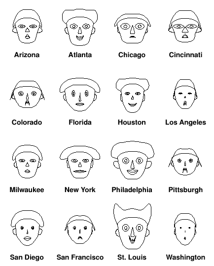

A Chat about Chernoff Faces
Andrew Nolan
10/12/2022
Intro
I started writing this blog post over a year ago, in fact, if I had finished it then, it would have been my first real blog post. That was my intention anyway. However, things happened, and now here we are many blog posts later. I think it is still an interesting topic and I hope you enjoy reading about it.
In the summer of 2020 I took the course CS 548 Knowledge Discovery and Data Mining at WPI. In one of the lectures we talked about data visualizations and briefly in one slide in that one lecture, we discussed Chernoff Faces. For some reason I think about this data visualization very often, way more than I should. I wanted to share them with you, hopefully you find them as fascinating as I do.
Background
Chernoff Faces were invented in 1973 by the American Mathematician, Herman Chernoff. The faces provide a way to visualize multivariable data by mapping data feature to visual features on a face [1][11]. The proposed benefits of this visualization are supported by the claim that humans can easily recognize faces and identify small changes between them. This is useful if the goal of the visualization is pattern recognition, outlier detection, or clustering similar data objects. However, the scale and specific values of data is often obscured by these faces. Without intimate knowledge of which values are mapped to what facial feature it is hard to decipher more than how much different datums are similar or outliers.
Although, these plots are somewhat uncommon, they are included as part of some programming languages. If you are a fan of R, the aplpack package includes features to plot Chernoff Faces. You can read more about it here.
MATLAB is another example of a language programming language with support for Chernoff Faces. This is done through the Glyphplots function in the Statistics toolbox. Some details can be found in this documentation about plotting multivariate data.
Both of these options are easy to use and fast ways to quickly generate a plot of your data.
A Simple Example
I have some real world examples I will share below. But first, I wanted to share a really simple example to illustrate how to use these visualizations. For this example, I will write the code in MATLAB. If you are interested in exploring the code I used, you can find it here.
We are going to use the famous Iris Dataset. This is a famous dataset first used by statistician and biologist Ronald Fisher in the 1930s. If you have taken a machine learning class before, you have probably seen an example with it. It is a very simple multivariate dataset using a few measurements of Iris flowers.
An example subset of the data can be seen here:
| Sepal Length | Sepal Width | Petal Length | Petal Width | Species |
| 5.1 | 3.5 | 1.4 | 0.2 | Setosa |
| 4.9 | 3.0 | 1.4 | 0.2 | Setosa |
| 4.7 | 3.2 | 1.3 | 0.2 | Setosa |
| 3.6 | 3.1 | 1.5 | 0.2 | Setosa |
| 6.3 | 3.3 | 6.0 | 2.5 | Virginica |
| 5.8 | 2.7 | 5.1 | 1.9 | Virginica |
| 7.1 | 3.0 | 5.9 | 2.1 | Virginica |
| 6.3 | 2.9 | 5.6 | 1.8 | Virginica |
| 7.0 | 3.2 | 4.7 | 1.4 | Versicolor |
| 6.4 | 3.2 | 4.5 | 1.5 | Versicolor |
| 6.9 | 3.1 | 4.9 | 1.5 | Versicolor |
| 5.5 | 2.3 | 4.1 | 1.3 | Versicolor |
The textbook data scientist question here is, how can you use these values (sepal length, sepal width, petal length, and petal width) to predict which subspecies of Iris a sample belongs to?
Typically, this question will be answered using machine learning. But here we will try to answer it through the power of data visualization with Chernoff Faces.
First, we will plot the data related to each subspecies. The goal is to identify patterns based in the data based on how the faces are displayed.
Since we are using MATLAB, it will map the columns of data to facial features in this order:
- Sepal Length -> Size of face
- Sepal Width -> Forehead/jaw relative arc length
- Petal Length -> Shape of forehead
- Petal Width -> Shape of jaw
Real World Examples
Considering that most people have probably not heard of this visualization, it's unsurprising that it is rarely used for real world applications. However, I wanted to share a few practical examples that could be found.
In 2006 a Social Science Statistics blogger shared a Baseball bloggers Chernoff face representation of 2005 National League Baseball statistics [4][5]. The faces below map the following features to facial features:
- Win percent -> face height, smile curve, and hair styling
- Hits -> face width, eye height, and nose height
- Home runs -> face shape, eye width, and nose width
- Walks -> mouth height, hair height, and ear width
- Stolen bases -> mouth width, hair width, and ear height.

While these statistics may be meaningful, it's hard to determine anything from these faces. In 2005 the winner of the National League was the Houston Astros (who then went on to lose to the White Sox in the World Series). In these faces, Houston doesn't particularly stand out. I'm not knowledgeable enough about baseball to tell you if that means anything, but it appears to me that would mean stand out stats don't necessarily determine winningness in baseball.
Most Chernoff Face discussion you can find online will be from blog posts like the one above, mostly as a for fun look at an obscure data visualization. But there are cases in which Chernoff Faces are used in publishable research. For example, in 2017, the Journal of Documentation published an entry titled "Big data analysis of public library operations and services by using the Chernoff face method" [12]. By using the following feature mapping, the researchers were able to use Chernoff Faces to compare libraries in London and Seoul over time.
Challenges and limitations
As fun as Chernoff Faces are, they are not all good. https://engineering.purdue.edu/~ebertd/papers/Chernoff_990402.PDF
Further Reading
- Wikipedia
- A Critique of Chernoff Faces
- Mapping Quality of Life with Chernoff Faces
- Chernoff Faces (Baseball)
- What's the Matter With Chernoff Faces?
- How to visualize data with cartoonish faces ala Chernoff
- Chernoff Faces (Crime)
- Deep Chernoff Faces
- How can a data visualization be racist?
- Chernoff Faces Application in Livestock
- The Use of Faces to Represent Points in k-Dimensional Space Graphically
- Big Data Analysis of Public Library Operations and Services by using the Chernoff Face Method
If you are really excited about Chernoff Faces and haven't found enough with all these other resources, you can check out my original homework assignment for the Data Vis class all those years ago...
Enjoyed this article? Subscribe to the RSS Feed!